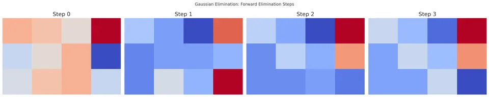

Gaussian elimination is a fundamental algorithmic procedure in linear algebra used to solve systems of linear equations, find matrix inverses, and determine the rank of matrices. The procedure systematically applies elementary row operations to transform a given matrix into an upper-triangular form (row echelon form), from which the solution to the system (if it exists and is unique) can be readily determined by back substitution.
From a conceptual viewpoint, Gaussian elimination provides a structured approach to eliminating unknowns step-by-step. Geometrically, each linear equation represents a hyperplane in $n$-dimensional space, and the solution of the system corresponds to the intersection point(s) of these hyperplanes. Gaussian elimination successively "clears out" the variables, enabling a direct path to the solution (or revealing inconsistencies or infinite solution sets if they exist).

Consider a system of $n$ linear equations with $n$ unknowns:
$$A\mathbf{x} = \mathbf{b},$$ where
$$ A = \begin{bmatrix} a_{11} & a_{12} & \cdots & a_{1n}\\ a_{21} & a_{22} & \cdots & a_{2n}\\ \vdots & \vdots & \ddots & \vdots\\ a_{n1} & a_{n2} & \cdots & a_{nn} \end{bmatrix} $$
$$ \mathbf{x} = \begin{bmatrix} x_1 \\ x_2 \\ \cdots \\ x_n \end{bmatrix} $$
$$ \mathbf{b} = \begin{bmatrix} b_1 \\ b_2 \\ \cdots \\ b_n \end{bmatrix} $$
We form the augmented matrix $[A|\mathbf{b}]$:
$$ [A|\mathbf{b}] = \begin{bmatrix} a_{11} & a_{12} & \cdots & a_{1n} & b_1 \\ a_{21} & a_{22} & \cdots & a_{2n} & b_2 \\ \vdots & \vdots & \ddots & \vdots & \vdots \\ a_{n1} & a_{n2} & \cdots & a_{nn} & b_n \end{bmatrix} $$
The goal of Gaussian elimination is to perform a series of row operations to transform $[A|\mathbf{b}]$ into an upper-triangular form:
$$ [U|\mathbf{c}] = \begin{bmatrix} u_{11} & u_{12} & \cdots & u_{1n} & c_1 \\ 0 & u_{22} & \cdots & u_{2n} & c_2 \\ \vdots & \vdots & \ddots & \vdots & \vdots \\ 0 & 0 & \cdots & u_{nn} & c_n \end{bmatrix} $$
where $U$ is an upper-triangular matrix. Once in this form, the solution $\mathbf{x}$ can be found by back substitution.
The derivation of Gaussian elimination closely mirrors the logic of systematic elimination of variables from a set of equations:
I. Elimination of $x_1$ from equations 2 through $n$:
Suppose the first pivot (the leading element in the first row) is $a_{11}$. By using row operations, we can eliminate the $x_1$-term from all equations below the first. This is achieved by subtracting suitable multiples of the first row from subsequent rows.
II. Elimination of $x_2$ from equations 3 through $n$:
After the first step, the second row now has a leading coefficient (pivot) in the second column. Using this pivot, we eliminate the $x_2$-term from all equations below the second.
III. Continue this process until the last pivot $a_{nn}$ (in the $n$-th row) is in place. If at any stage a pivot is zero, we interchange rows (partial pivoting) to bring a nonzero pivot into the pivot position.
The end result is an upper-triangular system that can be solved starting from the last equation and moving upward (back substitution).
Input: An augmented matrix $[A|\mathbf{b}]$ representing the system $A\mathbf{x} = \mathbf{b}$.
Output: A solution vector $\mathbf{x}$ if it exists, or detection of no solution or infinitely many solutions.
Step-by-Step Procedure:
I. Form the augmented matrix:
$$ [A|\mathbf{b}] = \begin{bmatrix} a_{11} & a_{12} & \cdots & a_{1n} & b_1 \\ a_{21} & a_{22} & \cdots & a_{2n} & b_2 \\ \vdots & \vdots & \ddots & \vdots & \vdots \\ a_{n1} & a_{n2} & \cdots & a_{nn} & b_n \end{bmatrix} $$
II. Forward Elimination (to reach upper-triangular form):
For $i = 1$ to $n$:
II.I. Partial Pivoting (if desired): Find the row (pivotRow) below (and including) the current row $i$ that has the largest absolute value in column $i$. Swap the current row $i$ with pivotRow to reduce numerical instability.
II.II. Pivot Normalization: Divide the entire $i$-th row by $a_{ii}$ (the pivot) to make the pivot element equal to 1.
III.III. Elimination: For each row $j > i$, subtract $a_{ji}$ times the $i$-th row from the $j$-th row to make the elements below the pivot zero.
After these steps, the matrix is in row echelon form:
$$ [U|\mathbf{c}] = \begin{bmatrix} 1 & * & \cdots & * & * \\ 0 & 1 & \cdots & * & * \\ \vdots & \vdots & \ddots & \vdots & \vdots \\ 0 & 0 & \cdots & 1 & * \end{bmatrix} $$
where $*$ represents arbitrary numbers obtained during the process.
III. Back Substitution:
Starting from the last equation:
For $i = n$ down to 1:
$$x_i = c_i - \sum_{k=i+1}^{n} u_{ik} x_k.$$
Since $u_{ii}=1$ after normalization, $x_i$ can be directly computed. (If not normalized, divide by $u_{ii}$.)
This process yields the solution vector $\mathbf{x}$.
Given System:
$$ \begin{aligned} 2x + y - z &= 8, \\ -3x - y + 2z &= -11, \\ -2x + y + 2z &= -3. \end{aligned} $$
I. Augmented Matrix:
$$ [A|\mathbf{b}] = \begin{bmatrix} 2 & 1 & -1 & 8 \\ -3 & -1 & 2 & -11 \\ -2 & 1 & 2 & -3 \end{bmatrix} $$
II. Forward Elimination:
Pivot in first row is $a_{11} = 2$. Normalize the first row by dividing by 2:
$$ \begin{bmatrix} 1 & 0.5 & -0.5 & 4 \\ -3 & -1 & 2 & -11 \\ -2 & 1 & 2 & -3 \end{bmatrix} $$
Eliminate $x$-terms in row 2 and row 3 using row 1: For row 2: Add 3 times row 1:
$$ (-3)R_1 + R_2 \to R_2 \implies R_2 = \begin{bmatrix} 0 & 0.5 & 0.5 & 1 \end{bmatrix} $$
For row 3: Add 2 times row 1:
$$ (2)R_1 + R_3 \to R_3 \implies R_3 = \begin{bmatrix} 0 & 2 & 1 & 5 \end{bmatrix} $$
Now the matrix is:
$$ \begin{bmatrix} 1 & 0.5 & -0.5 & 4 \\ 0 & 0.5 & 0.5 & 1 \\ 0 & 2 & 1 & 5 \end{bmatrix} $$
Next pivot is $a_{22} = 0.5$. Normalize the second row by dividing by 0.5:
$$ \begin{bmatrix} 1 & 0.5 & -0.5 & 4 \\ 0 & 1 & 1 & 2 \\ 0 & 2 & 1 & 5 \end{bmatrix} $$
Eliminate below the second pivot:
For row 3: subtract 2 times row 2 from row 3:
$$ R_3 - 2R_2 \implies R_3 = \begin{bmatrix} 0 & 0 & -1 & 1 \end{bmatrix} $$
Now the matrix is in upper-triangular form:
$$ [U|\mathbf{c}] = \begin{bmatrix} 1 & 0.5 & -0.5 & 4 \\ 0 & 1 & 1 & 2 \\ 0 & 0 & -1 & 1 \end{bmatrix} $$
III. Back Substitution:
From the last equation: $-1 \cdot z = 1 \implies z = -1$. Substitute $z = -1$ into second equation:
$y + 1(-1) = 2 \implies y = 3$.
Substitute $y = 3, z = -1$ into first equation:
$x + 0.5(3) -0.5(-1) = 4 \implies x + 1.5 + 0.5 = 4 \implies x = 2$.
The solution is $\mathbf{x} = (2, 3, -1)^\top$.